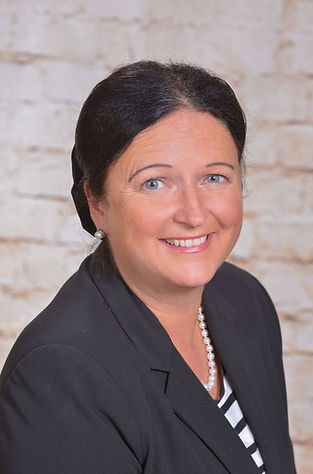

Conseil d’entreprise pour PME
Des chiffres clairs pour des décisions claires.
Contrôle de gestion, financement, internationalisation et informatique liée à l’ERP pour petites et moyennes entreprises – depuis 2005.

- 2005Conseillère d’entreprise indépendante depuis
- 19Références issues de l’économie et de la formation
- 5Domaines de prestations
Prestations
Cinq domaines de prestations – de la planification à la mise en œuvre.
- Contrôle de gestion et pilotage financierPlanification, pilotage, reporting et développement économique.
- FinancementsDes financements sur mesure pour votre projet.
- Internationalisation et accompagnement de la croissanceSoutien face aux défis internationaux, à l’expansion et au développement organisationnel.
- Conseil en processus et informatique autour de l’ERPRapprocher exigences de gestion et solutions informatiques efficaces.
- Mise en place, formation et transfert de connaissancesMise en place, séminaires, conférences et enseignement – transmis de façon pragmatique.
Collaboration
Comment nous travaillons ensemble
Premier entretien
Vous décrivez votre question et votre objectif. Nous clarifions si et comment je peux vous accompagner. L’entretien est sans engagement.
Analyse
La situation de départ, les chiffres et les processus sont examinés ensemble pour savoir par où commencer.
Mise en œuvre et accompagnement
L’analyse débouche sur des concepts viables et des étapes réalisables. J’accompagne la mise en œuvre – à court ou à long terme.
Profil en bref
Mag. Dr. Sabine Stolz, MSc
Conseillère d’entreprise indépendante depuis 2005. Auparavant, postes en contrôle de gestion et en direction financière chez VAE AG, AVL, ZAT et Ceram Catalysts, avec des séjours à l’étranger en Russie, dans les pays baltes, en Chine, aux États-Unis, en France et en Allemagne.
Depuis 2018, formatrice certifiée dans l’éducation des jeunes et des adultes. Langues : allemand, anglais, français, russe.
« Qui connaît son but trouve son chemin ! »
Découvrir le profilRéférences
Une sélection de collaborations passées
19 entreprises et institutions, dont AVL List GmbH, voestalpine AG, Universität Graz et FH Campus 02.


Entretien d’orientation
Une question dont vous souhaitez discuter ?
Lors d’un entretien d’orientation sans engagement, nous clarifions si et comment je peux vous accompagner.